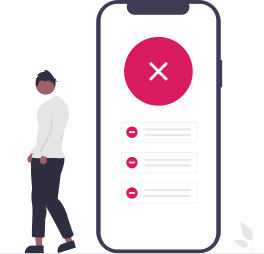

<div class="offline-page">
  <!-- ./static/instaff-logo-light-full-text.svg -->
  <section>
    <header>
      <a href="/" data-link>
        <h2>
          

          

          <span class="visually-hidden">
            Offline
          </span>
        </h2>
      </a>
    </header>

    <div class="main-content">
      

      You are currently offline.
    </div>

    <p>
      Looks like you’re not connected to a network. Check your settings and try again.
    </p>

    <div class="button-container">
      <a href="/" data-link>
        <button class="secondary-button">
          GO BACK HOME
        </button>
      </a>
  </section>
</div>